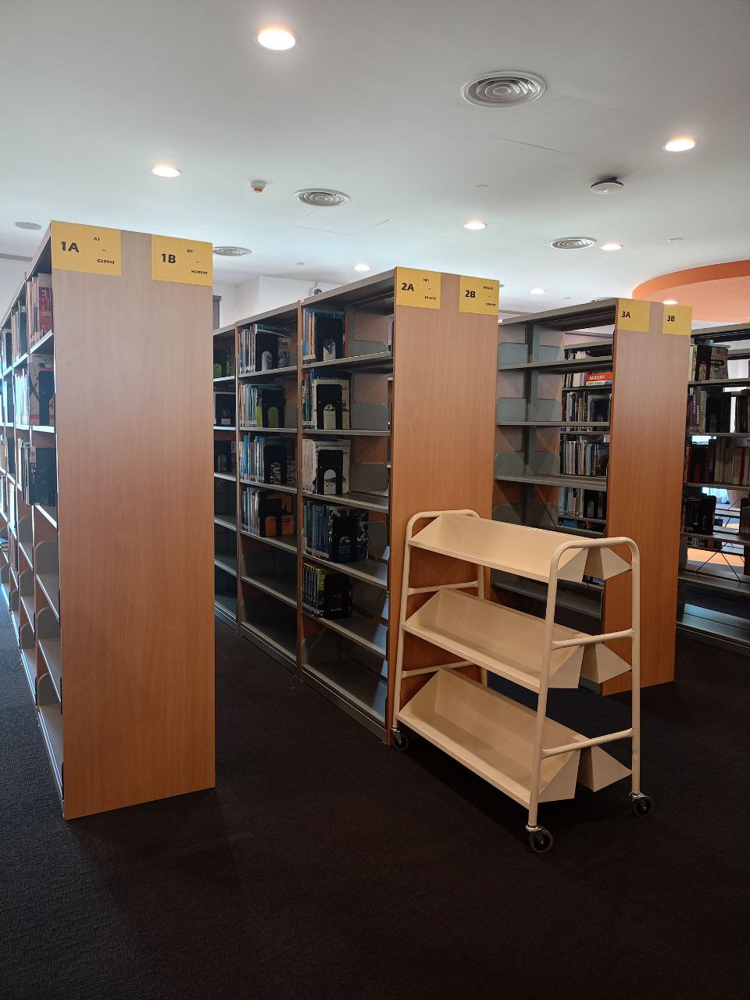
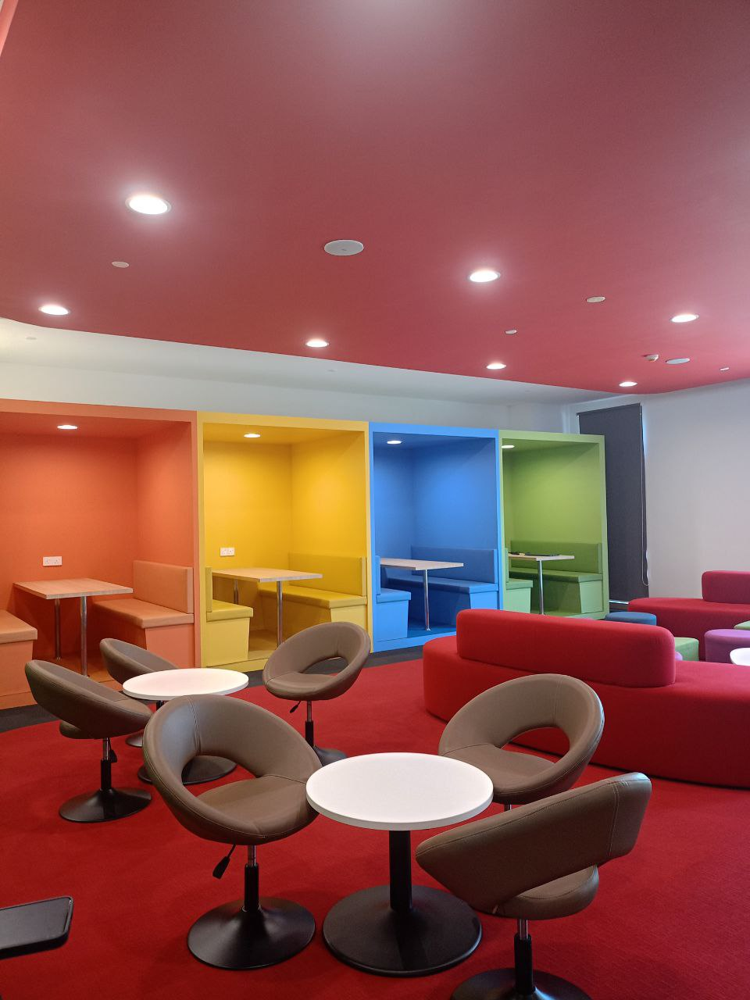

|

 |
Academic visit to the UOW Malaysia library
🞂Observed: - Digital collection management systems - Flexible learning space design - User-friendly and efficient library services 🞂Reflection: I was truly impressed by the high-tech approach and welcoming learning environment at UOW Malaysia’s library. integration of digital tools with user-centered design created a space that felt both modern and inclusive. It inspired me to think about how libraries can evolve to meet the needs of diverse users while maintaining their core mission of knowledge accessibility. |
🏫 UiTM Permatang Pauh.
|
Educational visit to the academic library
🞂Activities included: - Briefing on the library’s organizational structure - Introduction to cataloging and classification systems - Demonstration of digital resource search tools
🞂Reflection: This visit opened my eyes to the operational differences between libraries in technical and social science campuses. I gained valuable insights into how library services are tailored to meet the academic focus of each institution. It also helped me appreciate the importance of adaptability and specialized knowledge in library management. |

|